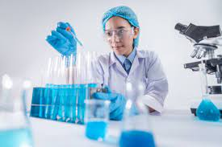
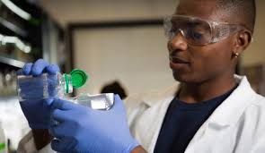

FUTURE MIND HIGH SCHOOL


Science is the study of living and non-living things,study
of facts and the way we interact with the world.
Learning the systematic scientific knowledges
teaches students about the scientific world and how it operates.
The steps that make up the scientific method generally fall into three phases:
observation, experimentation and conclusion.
The first four steps in scientific research
all fall into the observation phase and include initial observations,
asking questions, gathering information and forming hypotheses.
The concept is simple: Before you can conduct any experiments,
you must first observe something in nature that raises
questions and prompts you to consider new ideas or solutions
to a problem.
In many cases, step one takes place without any
conscious effort on the part of the observer.
In most educational philosophies,
learning about science simply isn’t enough. To fully
understand the experiential nature of science,
students need the space to do their own experiments,
learn how to conduct research, and practice
scientific learning through trial and error.
In academic school labs, students are active learners,
not just passive recipients of knowledge.
Labs provide students with various
opportunities to learn and experiment, which plays a
crucial role in the ongoing intellectual
development of students at any academic level.
Science labs
give students the time, space, and resources
to explore and experiment.
Labs provide students with various opportunities
to learn and experiment,
which plays a crucial role in the ongoing intellectual
development of students at any academic level.
Science labs give students the time, space,
and resources to explore and experiment.
Early Elementary Science Lab Learning
From the very start of a child’s educational journey,
science labs can play an important role in educational development.
At the kindergarten to second-grade levels,
kids are beginning to grasp the idea that actions have consequences.
Simple experiments work best for kids at
this age level and they will need a lot of help to complete them.
An ideal science lab for elementary students
has lots of safe equipment.
Only the most basic chemicals are appropriate,
like baking soda and vinegar.
Labs provide students with various
opportunities to learn and experiment,
which plays a crucial role in the ongoing intellectual
development of students at any academic level.
Science labs give students the time,
space, and resources to explore and experiment.
Experiments that teach kids about color, light,
and sound can help them explore their world.
Doing science experiments benefits these kids by
letting them be creative and not just receive answers, but find answers.
Labs provide students with various opportunities
to learn and experiment, which plays a crucial
role in the ongoing intellectual development of
students at any academic level.
Science labs give
students the time, space, and resources to explore and experiment.
Because of the nature of elementary education,
most science at this level is done in the classroom
instead of a separate lab space.
Students at this
age level benefit greatly from consistent instruction,
and getting up and going to a lab can be disruptive.
Early elementary teachers can take advantage of the
time they spend with their students by having a
designated science corner or an in-classroom lab.

Labs provide students with various opportunities
to learn and experiment, which plays a crucial
role in the ongoing intellectual development of
students at any academic level.
Science labs give
students the time, space, and resources to explore and experiment.
Late Elementary Science Lab Learning
Students in grades 3-5 are just as curious as early
elementary students but are better equipped to ask
more articulate questions about their world.
They are interested in exploring the relationships
between living things and their environments,
which means that new biological concepts like
metamorphosis and the life cycle will start to resonate with them.
Labs provide students with various opportunities
to learn and experiment, which plays a crucial
role in the ongoing intellectual development of
students at any academic level.
Science labs give
students the time, space, and resources to explore and experiment.
Like early elementary school students,
late elementary school students typically
use a single classroom instructional model
for most academic subjects, including science.
Keeping lab equipment in the classroom will help
expose students to the types of equipment they’ll
be seeing more regularly in the next stage of their academic careers.
Labs provide students with various opportunities to
learn and experiment, which plays a crucial role in
the ongoing intellectual development of students at
any academic level.
Science labs give students the
time, space, and resources to explore and experiment.
The ideal science lab or science classroom for late
elementary school students can be a little more
complex than lab equipment for younger students,
but not by much. Safety is still a huge concern,
as little fingers aren’t the most coordinated.
Both stages of elementary school science should focus
on introducing good safety practices like close-toed
shoes, eye protection, and gloves where appropriate.
Lab science lets these students learn about procedures
and safety, as well as how their actions impact things around them.
By middle school, students will be much more
comfortable with the idea of transitioning
learning spaces and instructors, so at this stage,
it becomes much more feasible and enjoyable to have
a separate classroom as a dedicated science lab space.
Doing experiments in a science lab fosters independent
learning, as well as interdependence and peer learning
through working with lab partners.
Labs provide students with various opportunities to
learn and experiment, which plays a crucial role in
the ongoing intellectual development of students at
any academic level.
Science labs give students the time,
space, and resources to explore and experiment.
Students at the middle school level are also more
capable of grasping bigger, more complex concepts
about the interrelatedness of various processes and
how elements work in a biological or chemical system.
They are more responsible and mature enough to handle
glassware and run some experiments with less hands-on
direction from the instructors.
Labs provide students with various opportunities to learn
and experiment, which plays a crucial role in the ongoing
intellectual development of students at any academic level.
Science labs give students the time, space, and resources to
explore and experiment.
The ideal middle school science lab is a standalone room
where students have the space to conduct more complicated
experiments, particularly in regard to basic chemistry.
Dissections, light microscope work, and even introductory
cell biology are appropriate for a middle school science lab.
Depending on the size of the school, it may make sense to have
dedicated chemistry and biology labs.
Labs provide students with various opportunities to learn
and experiment, which plays a crucial role in the ongoing
intellectual development of students at any academic level.
Science labs give students the time, space, and resources
to explore and experiment.
High School Science Lab Learning
Labs provide students with various opportunities to
learn and experiment, which plays a crucial role in
the ongoing intellectual development of students at
any academic level.
Science labs give students the time,
space, and resources to explore and experiment.
By high school, students will have developed the
capability to analyze systems more thoroughly and
understand more advanced concepts.
High school students
typically need less time with an individual concept, and
instruction at this level relies on building on the basic
concepts towards a more advanced understanding of the
principles of various sciences.

Labs provide students with various opportunities to
learn and experiment, which plays a crucial role in
the ongoing intellectual development of students at
any academic level.
Science labs give students the time,
space, and resources to explore and experiment.
igh school science is designed to give students a solid
foundation in understanding the natural world, but also
to help students discover if a career in science is right for them.
The hands-on education they get in the lab is vital to
nurturing the next generation of science professionals,
and the high school lab sciences should be as engaging as possible.
At this level, science labs can be more specialized.
As the complexity of the science taught in the lab goes
up, so does the level of specialization within the lab.
High school chemistry and biology are advanced enough
that they really do need to be taught in separate rooms
with their own special set of equipment.
When students get to college, the world of science
specialization blossoms.
Where most high schools offer biology,
chemistry, physics, and earth science, colleges can offer highly
specialized versions of these courses that are tailored to the
demands of the scientific professions.
Labs are where future
scientists learn how to take experiments further than they
did in high school, and where they may find themselves really
designing and running experiments of their own for the first time.
Each branch of science needs its own labs at the college stage,
and many classes have designated lab space just for that one
course’s lab needs.
A microbiology lab has different
requirements than an organic chemistry lab, and so there’s
no one way to build university labs.
Instead, lab designers
need to consider the program’s specific needs, as well as
the needs of the students.